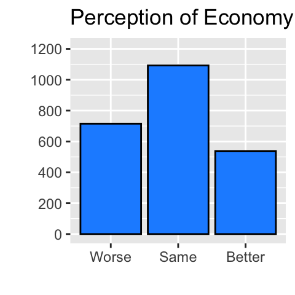
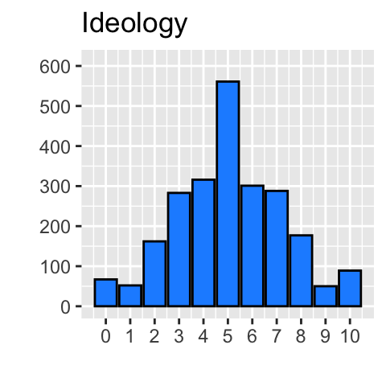

library(tidyverse)
library(jtools)9 Substantive Significance
Before you start working on this chapter, you need to do the following. If you need a help for each step, see Section 3.1.
Launch RStudio.
Load
POL232.RDatainto your current R session.Prepare an R Script to save all your work in this chapter. I suggest you name it “
POL232_Week#_YourLastName.R” or “POL232_Tutorial#_YourLastName.R” in which#is the number of the current week or tutorial session.You also need to load
tidyverseandjtoolspackages into your current R session (Section 1.4.2).
I suggest you actually write the R functions used below in your R script instead of copying and pasting them. See Section 3.1.5 for why.
I also suggest you sufficiently annotate your R script (i.e. leaving notes after the
#sign) so that you can use your R script as your reference when you work on tutorial exercises or data analysis paper assignments. In other words, this R script will be your notes for this chapter.
9.1 Preparation
9.1.1 Prepare Variables
As in the previous chapters, create percep_economy_cps_n, which is a numeric version of percep_economy_cps, and union_d, a logical version of union.
ces2019 <- ces2019 |>
mutate(percep_economy_cps = fct_relevel(percep_economy_cps,
"(2) Worse", "(3) About the same", "(1) Better") ) |>
mutate(percep_economy_cps = fct_recode(percep_economy_cps,
"Worse" = "(2) Worse",
"Same" = "(3) About the same",
"Better" = "(1) Better") ) |>
mutate(percep_economy_cps_n = as.numeric(percep_economy_cps)) ces2019 <- ces2019 |> # Change the name of categories of union to TRUE and FALSE.
mutate( union_d = fct_recode(union, "TRUE" = "(1) Yes", "FALSE" = "(2) No") ) |>
mutate( union_d = as.logical(union_d) ) # Then, apply the as.logical() function.9.1.2 Prepare New Data Frame
Also construct a new data frame which includes non-missing observations for the variables used in the example linear regression model in this chapter. These variables are trudeau_therm_cps, percep_economy_cps_n, percep_economy_cps, ideology, union_d, and province. The new data frame is named my_data in the code below.
my_data <- ces2019 |>
drop_na( trudeau_therm_cps, percep_economy_cps_n, percep_economy_cps,
ideology, union_d, province )9.1.3 Estimate Example Model
As a primary example, I will use a multiple linear regression of trudeau_therm_cps on percep_economy_cps_n, ideology, union_d and province. Let’s estimate this model and assign it to a new object, named model.
model <- lm(formula = trudeau_therm_cps ~ percep_economy_cps_n
+ ideology + union_d + province,
data = my_data)Note that the model includes four different types of independent variables:
a
numericversion of an ordinal categorical variable (percep_economy_cps_n),a quantitative variable (
ideology),a dummy variable stored as a
logical(union_d), anda nominal categorical variable stored as a
factor(province).
I will discuss how we can evaluate the substantive significance for each type of variable.
Let’s take a look at the estimation result by the summ() function from the jtools package.
summ(model, confint = TRUE, digits = 4)MODEL INFO:
Observations: 2346
Dependent Variable: trudeau_therm_cps
Type: OLS linear regression
MODEL FIT:
F(12,2333) = 69.7279, p = 0.0000
R² = 0.2640
Adj. R² = 0.2602
Standard errors:OLS
----------------------------------------------------------------------------
Est. 2.5% 97.5% t val. p
-------------------------- --------- --------- --------- ---------- --------
(Intercept) 15.2848 9.7034 20.8662 5.3702 0.0000
percep_economy_cps_n 15.8163 14.2630 17.3697 19.9667 0.0000
ideology -2.6628 -3.1577 -2.1678 -10.5489 0.0000
union_dTRUE 0.5959 -2.0253 3.2171 0.4458 0.6558
provinceBC 11.7557 7.1483 16.3631 5.0034 0.0000
provinceMB 10.8040 5.1630 16.4450 3.7558 0.0002
provinceNB 16.9362 10.7094 23.1630 5.3336 0.0000
provinceNL 18.4670 12.1214 24.8126 5.7068 0.0000
provinceNS 12.1679 5.9590 18.3769 3.8430 0.0001
provinceON 15.3387 10.6994 19.9780 6.4835 0.0000
provincePE 15.8607 9.6777 22.0437 5.0303 0.0000
provinceQC 12.3670 7.6228 17.1111 5.1118 0.0000
provinceSK 3.4424 -2.2297 9.1144 1.1901 0.2341
----------------------------------------------------------------------------The linear regression table above shows the 95% confidence intervals for all coefficients. You can also read the statistical significance from the p-values at the right most column (p). If this number times 100 percent — (p \(\times\) 100)% — is smaller than a certain significance level (e.g., 5%, 1%, 0.1%), then the coefficient with this p-value is statistically significant at this significance level.
If you want R to tell you which coefficient is statistically significant at the 5%, 1% or 0.1% significance level, you may use the summary() function. Or if you use the export_summs() function from the huxtable package, then you can see both confidence intervals and the signs for statistical significance together in a single table. Review Section 8.4 for detail.
9.2 Substantive Significance
9.2.1 Basic Idea
When we have a certain substantive/theoretical expectation for the relationship of two variables in the population, the first step to examine this expectation is to see whether we have a point estimate of the coefficient of a variable of our interest in the expected direction (i.e., positive or negative) and what range of values its confidence interval encompasses. If the confidence interval does not include zero, we may say that the coefficient of our interest is statistically distinguishable from zero, or more simply, statistically significant.1 We have seen how to conduct these analyses in R in Chapter 8.
The second step is to examine whether the relationship found is substantively important or significant. The relationship may be substantively important/significant if the magnitude of the estimated relationship is meaningfully large in its specific context.2 There is no unique way to assess the substantive significance of the relationship. In general, you need to make an argument based on the specific nature of the relationship of your interest and the findings in your empirical research.
There may be many different ways to make such an argument, but for the final paper in this class, I suggest you estimate the change in the expected value of the dependent variable (\(E(Y|X)\)) corresponding to a meaningful change in the independent variable of your interest (\(X\)) based on the results of your linear regression analysis.
This is what I have suggested in my lecture. To recap, let me restate my suggestion below.
- Identify a substantively meaningful amount of change in \(X\). Let’s say this is identified as the change from \(X^*\) to \(X^{**}\). Then, it may be denoted as (\(\Delta X = X^{**} - X^*\)).
- Estimate the change in \(E(Y|X)\), the change in the conditional expectation/mean of Y, corresponding to this substantively meaningful change in \(X\). This change can be denoted by \(E(Y|X^{**}) - E(Y|X^{*}) = \beta \times \Delta X\), where \(\beta\) is the coefficient of \(X\).
- Estimate the confidence interval for this change in \(E(Y|X)\).
- Discuss the substantive magnitude of the relationship between \(Y\) and \(X\) based on both the point estimate and confidence interval for this change in \(E(Y|X)\).

As you can see in the above figure, this change in \(E(Y|X) = E(Y|X^{**}) - E(Y|X^{*})\) is the difference in the values of the dependent variable along a linear regression line in the population. This “difference (or change) in \(E(Y|X)\)” is the population parameter of our interest in the present context.
Then, we estimate the change in \(E(Y|X)\) in the population using the difference in \(\widehat{Y}\) or the difference in \(\widehat{E(Y|X)} = \widehat{E(Y|X^{**})} - \widehat{E(Y|X^{*})}\), which is the difference in the predicted/fitted values computed from our sample linear regression model or the difference in the values of the dependent variable along a linear regression line in our sample. In other words, the difference in the predicted/fitted values, \(\widehat{E(Y|X)}\) or \(\widehat{Y}\), is our estimator or estimate for the difference in \(E(Y|X)\) in the population.
Throughout this chapter, I will use “the difference (or change) in \(E(Y|X)\) (or the conditional expectation/mean)” and “\(E(Y|X^{**}) - E(Y|X^{*})\)” to refer to our population parameter
Similarly, I will use “the difference (or change) in \(\widehat{E(Y|X)}\)” and “\(\widehat{E(Y|X^{**})} - \widehat{E(Y|X^{*})}\)” to refer to our estimator or estimate for the change in \(E(Y|X)\) in the population.
Note that the discussion so far implicitly assumes that we have only one independent variable, \(X\), on the right hand side of a linear regression equation. However, we normally control for some other variables, which are collectively denoted by \(Z\) here. Therefore, the change in the conditional expectation of \(Y\) corresponding to the meaningful change in \(X\) is estimated holding all other variables \(Z\) constant at certain values, say \(Z^+\). Incorporating \(Z^+\), our population parameter can be denoted as “the difference (or change) in \(E(Y|X,Z^+) = E(Y|X^{**},Z^+) - E(Y|X^{*},Z^+)\)”.
For example, suppose we want to evaluate the substantive magnitude of the relationship between trudeau_therm_cps (\(Y\)) and percep_econ_cps_n (\(X\)) controlling for other variables (\(Z\)) based on the multiple linear regression estimated in Section 9.1.3. In this case, we first estimate the difference in the conditional expectations of trudeau_therm_cps (\(E(Y|X,Z)\)) between the individuals who perceived that the state of national economy had gotten better (\(X = 3\)) and those who perceived that it had gotten worse (\(X = 1\)), holding all other variables constant (\(Z = Z^+\)). In equation, the difference we estimate may be written as \(E(Y | X = 3, Z^+) - E(Y | X = 1, Z^+)\)
We should also derive the confidence interval for the difference in the conditional expectations of trudeau_therm_cps between the individuals who perceived that the state of economy had gotten better and those who perceived that it had gotten worse, holding other variables constant. Then, we will offer an argument about whether this difference in \(E(Y|X,Z^+)\) is meaningfully large in the particular context of this relationship based on its point estimate and confidence interval.
9.2.2 Estimation by the emmeans() Package
To estimate the difference in \(E(Y|X,Z^+)\) and derive its confidence interval, we will use the emmeans() function and the contrast() function from the emmeans package.
First, install the emmeans package (Section 1.4).
install.packages("emmeans")Then, load this package.
library(emmeans)Our analysis is in two steps.
In the first step, we will use the
emmeans()function to estimate \(E(Y|X,Z^+)\) for different values of \(X\), such as \(X^*\) and \(X^{**}\), holding other variables \(Z\) constant at \(Z^+\).In the second step, we will supply the result of the
emmeans()function to thecontrast()function to conduct statistical inference for the difference in \(E(Y|X,Z^+) = E(Y|X^{**},Z^+) - E(Y|X^{*},Z^+)\).
I will explain each step in turn in the following two sections.
9.2.3 Estimate \(E(Y|X,Z^+)\): emmeans()
For the first step to estimate \(E(Y|X,Z^+)\), we use the emmeans() function. For our purpose, we specify the following three arguments in the emmeans() function.
The first argument (
object) is the outcome of thelm()function, which is used to estimate the difference in \(E(Y|X,Z^+)\)The second argument (
spec) is the name of the independent variable of our interest, \(X\).The third argument (
at) is the values taken by the main independent variable of our interest, \(X\), and control variables, \(Z\). For \(X\), we will specify both \(X = X^*\) and \(X = X^{**}\). For all other control variables, \(Z\), we can specify \(Z = Z^+\), but we will see that the specification of the values for \(Z\) can be omitted for our purpose to compute the difference in \(E(Y|X,Z^+)\).
As we use the multiple linear regression model estimated in Section 9.1.3, \(Y\) is trudeau_therm_cps, \(X\) is percep_economy_cps_n, and \(Z\) includes ideology, union_d, and province.
Let’s estimate the conditional expectation of trudeau_therm_cps between the respondents who perceived the state of economy had gotten better (percep_economy_cps_n = 3) and those who perceived it had gotten worse (percep_economy_cps_n = 1), holding the other control variables constant this way: ideology= 5,union_d=FALSE, andprovince=AB` (i.e., non-union member, Alberta resident with neutral ideology).
Here,
\(X = X^{**}\) corresponds to “
percep_economy_cps_n = 3,”\(X = X^*\) corresponds to “
percep_economy_cps_n = 1,” and\(Z = Z^+\) corresponds to “
ideology = 5,union_d = FALSE, andprovince = AB”.
For simplicity, let’s estimate \(E(Y|X^*,Z^+)\) first. This is the conditional expectation of \(Y\) when the value of \(X\) is held at \(X^*\) and the values of \(Z\) at \(Z^+\).
emmeans( object = model, # The first argument is the output from the lm() function.
specs = "percep_economy_cps_n", # The second argument is the independent
# variable of our interest.
# In the third argument, we specify the values at which we want to hold
# both the main independent variable of our interest and the other
# control variables. We may include the equations for all independent
# variables within the list() function on the right-hand side of this
# argument.
at = list(percep_economy_cps_n = 1,
ideology = 5, union_d = FALSE, province = "AB") ) percep_economy_cps_n emmean SE df lower.CL upper.CL
1 17.8 2.04 2333 13.8 21.8
Confidence level used: 0.95 In the output above, you can see the point estimate of \(E(Y|X^*,Z^+)\) under emmean, its standard error under SE, the lower end of the 95% confidence interval for \(E(Y|X^*,Z^+)\) under lower.CL, and the upper end under upper.CL. I skip the “df” column as we don’t cover the degrees of freedom (“df”) in this class. According to this result, the conditional expectation of trudeau_therm_cps when percep_economy_cps_n = 1, ideology = 5, union_d = FALSE, and province = AB is estimated as 17.8, and its 95% confidence interval is [13.8, 21.8].
In the second argument (specs), we specified percep_economy_cps_n as the main independent variable, X, for which we want to estimate \(E(Y|X,Z^+)\) at different values.
If we specify multiple values for percep_economy_cps_n in the third argument (at), then the emmeans() function will estimate multiple \(E(Y|X,Z^+)\) corresponding to each of the values specified for percep_economy_cps_n.
Below I specified three values — 1, 2 and 3 — for percep_economy_cps_n using c() to list all these values.
emmeans( object = model,
specs = "percep_economy_cps_n",
# In the third argument, we specify three values --- 1, 2 and 3 --- for
# percep_economy_cps_n.
at = list(percep_economy_cps_n = c(1,2,3),
ideology = 5, union_d = FALSE, province = "AB") ) percep_economy_cps_n emmean SE df lower.CL upper.CL
1 17.8 2.04 2333 13.8 21.8
2 33.6 2.05 2333 29.6 37.6
3 49.4 2.33 2333 44.8 54.0
Confidence level used: 0.95 Then, the emmeans() function estimated three conditional expectations of trudeau_therm_cps for each value specified for percep_economy_cps_n holding other variables at ideology = 5, union_d = FALSE, and province = AB. Specifically, the conditional expectation of trudeau_therm_cps is 17.8 when percep_economy_cps_n = 1, 33.6 when percep_economy_cps_n = 2, and 49.4 when percep_economy_cps_n = 3, holding other variables at the specified values.
Note that the emmeans() function estimates \(E(Y|X,Z^+)\) for each of the specified values only for the variable specified in the specs argument (\(X\)). For example, the code below lists multiple values for ideology in the at argument3 while percep_economy_cps_n is still suggested in the specs argument. This code does not produce multiple \(E(Y|X,Z)\) for each of the specified values for ideology.
emmeans( object = model,
specs = "percep_economy_cps_n",
# Now we specify the values from 0 to 10 for "ideology,"
# but the specs argument is still "percep_economy_cps_n."
at = list(percep_economy_cps_n = 1,
ideology = c(0:10), union_d = FALSE, province = "AB") ) percep_economy_cps_n emmean SE df lower.CL upper.CL
1 17.8 2.04 2333 13.8 21.8
Results are averaged over the levels of: ideology
Confidence level used: 0.95 The above command estimated only one \(E(Y|X,Z)\). There is also the message that “Results are averaged over the levels of: ideology”. What this means is that the emmeans() function first estimated multiple \(E(Y|X,Z)\) for each of the specified values from 0 to 10 of ideology with other variables fixed at the specified values and then took the average of \(E(Y|X)\) across all the values of ideology from 0 to 10. If we want to estimate \(E(Y|X,Z)\) for each of these values of ideology separately, we should specify ideology in the specs function as in the code below. Note that ideology is the main independent variable of our interest (\(X\)), and percep_economy_cps_n is one of the control variables (\(Z\)) in this case.
emmeans( object = model,
specs = "ideology",
# The specs argument is now changed to "ideology."
at = list(percep_economy_cps_n = 1,
ideology = c(0:10), union_d = FALSE, province = "AB") ) ideology emmean SE df lower.CL upper.CL
0 31.10 2.54 2333 26.113 36.09
1 28.44 2.40 2333 23.733 33.14
2 25.78 2.27 2333 21.316 30.23
3 23.11 2.17 2333 18.856 27.37
4 20.45 2.09 2333 16.346 24.55
5 17.79 2.04 2333 13.779 21.80
6 15.12 2.03 2333 11.153 19.10
7 12.46 2.04 2333 8.466 16.46
8 9.80 2.08 2333 5.718 13.88
9 7.14 2.15 2333 2.914 11.36
10 4.47 2.25 2333 0.058 8.89
Confidence level used: 0.95 Now the emmeans() function returned the estimation of \(E(Y|X,Z^+)\) for all the specified values of ideology (\(X\)), respectively, from 31.10 when ideology = 0 to 4.47 when ideology = 10 holding the other variables constant at the specified values (\(Z^+\)).
So far, we have specified the values for all variables included in our linear regression model (\(X\) and \(Z\)). For our purpose, however, it suffices to specify the values just for the independent variable of our interest (\(X\)). This is because what we are interested in is the difference in \(E(Y|X,Z)\) across different values of \(X\) holding other control variables \(Z\) constant. For this purpose, which values we hold control variables at do not matter. If the values of control variables are not specified, the emmeans() function will use means of these variables. In the code below, I specified the values for percep_economy_cps_n only in the third argument (at).
emmeans( object = model,
specs = "percep_economy_cps_n",
# Now we specify the values for percep_economy_cps_n only.
at = list( percep_economy_cps_n = c(1,2,3) ) ) percep_economy_cps_n emmean SE df lower.CL upper.CL
1 29.6 1.020 2333 27.6 31.6
2 45.5 0.755 2333 44.0 46.9
3 61.3 1.160 2333 59.0 63.6
Results are averaged over the levels of: union_d, province
Confidence level used: 0.95 The estimated conditional expectations of trudeau_therm_cps for each value of percep_economy_cps_n in this output are different from those reported before. This is because the values of other control variables \(Z\) are held at different values. More specifically, without the values specified in the at argument, the values of the other variables \(Z\) are held at their means, if the variables are numeric. In the current example, as ideology is a numeric variable, its value is held at its mean. If \(Z\) are factor or logical variables, \(E(Y|X,Z)\) is first computed for each category of these variables in \(Z\), and the average of \(E(Y|X,Z)\) is computed across all these categories of \(Z\). Therefore, there is a message in the above output indicating “Results are averaged over the levels of: union_d, province.”
Because what values we hold control variables constant at do not matter when we take the difference in \(E(Y|X)\) by the contrast() function introduced in the next section, we will specify the values only for the independent variable of our interest \(X\) in the at argument of the emmeans() function in the rest of this chapter.
9.2.4 Statistical Inference for Difference in \(E(Y|X,Z^+)\): contrast()
In the second step, we will supply the result of the emmeans() function to the contrast() function to estimate the difference in \(E(Y|X)\) between different values of the independent variable of interest. In other ward, we estimate \(E(Y|X^{**},Z^+) - E(Y|X^{*},Z^+)\) by this method.
Let’s estimate the difference in the conditional expectation of trudeau_therm_cps when percep_economy_cps_n = 1 (the respondent’s perception of economy is “Worse”) and when percep_economy_cps_n = 3 (the respondent’s perception of economy is “Better”), controlling for other variables.
Recall that we can estimate \(E(Y|X,Z^+)\) for each of these two values of percep_economy_cps_n as below. Note that I use the pipe operator (|>) in this code.
model |>
# "model" will be piped to the emmeans() function as its first argument.
emmeans( specs = "percep_economy_cps_n",
# We now specify two values --- 1 and 3 --- only for percep_economy_cps_n
# in the at argument.
at = list( percep_economy_cps_n = c(1,3) ) ) percep_economy_cps_n emmean SE df lower.CL upper.CL
1 29.6 1.02 2333 27.6 31.6
3 61.3 1.16 2333 59.0 63.6
Results are averaged over the levels of: union_d, province
Confidence level used: 0.95 We supply this output to the contrast() function to take the difference. We set the method argument of the contrast() function to “pairwise”, so that the contrast() function will estimate a pairwise difference in \(E(Y|X,Z^+)\) between the values of \(X\) specified in the emmeans() function.
model |>
emmeans( specs = "percep_economy_cps_n",
at = list( percep_economy_cps_n = c(1,3) ) ) |>
# The output from the emmeans() function is piped to the contrast() function.
# The method argument is set to "pairwise".
contrast( method = "pairwise" ) contrast estimate SE df t.ratio
percep_economy_cps_n1 - percep_economy_cps_n3 -31.6 1.58 2333 -19.967
p.value
<.0001
Results are averaged over the levels of: union_d, province In the above output, the first column, named contrast, lists a pairwise comparison of the values of the independent variable \(X\) that we specified. In this column, we can see percep_economy_cps_n1 - percep_economy_cps_n3, which means that the contrast here is 1 - 3 in the value of percep_economy_cps_n. This indicates that what was estimated here was the conditional expectation of trudeau_therm_cps when percep_economy_cps_n = 1 (“Worse”) minus the conditional expectation of trudeau_therm_cps when percep_economy_cps_n = 3 (“Better”), controlling for other variables. This is the expected change in trudeau_therm_cps when the percep_economy_cps variable changes from “Better” to “Worse”. Because the change in percep_economy_cps considered here corresponds to a two-unit decline of the value of percep_economy_cps_n, and the coefficient estimate on percep_economy_cps_n is positive (15.8163), the expected difference in trudeau_therm_cps in the current scenario is negative, \((-2) \times 15.8 = -31.6\). This is perhaps counter intuitive, because the estimated relationship between trudeu_therm_cps and percep_economy_cps_n is positive.
The problem here is that the pairwise difference computed was 1 - 3 in terms of the values of percep_economy_cps_n, or “Worse - Better” in terms of percep_economy_cps. However, what we want instead is a pairwise difference of 3 - 1 or “Better - Worse”. That is, we want to reverse the order of these values.
We can correct this in two ways. First, we may reverse the order of the values specified for percep_economy_cps_n in the at argument in the emmeans() function as in the following code.
model |>
emmeans( specs = "percep_economy_cps_n",
at = list( percep_economy_cps_n = c(3,1) ) ) |>
# Now the values are specified as c(3,1) instead of c(1,3).
contrast( method = "pairwise") contrast estimate SE df t.ratio
percep_economy_cps_n3 - percep_economy_cps_n1 31.6 1.58 2333 19.967
p.value
<.0001
Results are averaged over the levels of: union_d, province Second, we may keep the original order of the values for percep_economy_cps_n in the emmeans() function, but change the method argument to "revpairwise" in the conrast() function. “revpairwise” stands for a reversed pairwise comparison. As its name suggests, if we use “revpairwise,” the contrast() function reverses the order of a pairwise comparison.
model |>
emmeans( specs = "percep_economy_cps_n",
at = list(percep_economy_cps_n = c(1,3) ) ) |>
# Now the original order of the values --- c(1,3) --- is kept.
# The method argument is changed to "revpairwise".
contrast( method = "revpairwise") contrast estimate SE df t.ratio
percep_economy_cps_n3 - percep_economy_cps_n1 31.6 1.58 2333 19.967
p.value
<.0001
Results are averaged over the levels of: union_d, province Either way, now we can get the difference we want — the change in the conditional expectation of trudeau_therm_cps when percep_economy_cps_n changes from 1 to 3 or percep_economy_cps changes from “Worse” to “Better”, which may be computed as \(2 \times 15.8 = 31.6\)).
In the above outputs, what follows after contrast and estimate are a few statistics for statistical inference about the estimated difference in \(E(Y|X,Z^+)\), such as its standard error (SE) and p-value (p.value). We can also derive the confidence interval for the difference in \(E(Y|X,Z^+)\) by specifying the infer argument to TRUE in the contrast() function as in the code below.
model |>
emmeans( specs = "percep_economy_cps_n",
at = list( percep_economy_cps_n = c(1,3) ) ) |>
# Now we add "infer = TRUE" in the contrast() function.
contrast( method = "revpairwise", infer = TRUE ) contrast estimate SE df lower.CL
percep_economy_cps_n3 - percep_economy_cps_n1 31.6 1.58 2333 28.5
upper.CL t.ratio p.value
34.7 19.967 <.0001
Results are averaged over the levels of: union_d, province
Confidence level used: 0.95 In this output, lower.CL indicates the lower end of the 95% confidence interval for the difference and upper.CL the upper end. According to this result, the 95% confidence interval for the difference in the conditional expectation of trudeau_therm_cps between those who perceived that the national economy had gotten better and those who perceived that it had gotten worse, controlling for the other variables included in the model, is [28.5, 34.7].
We can also change the confidence level by specifying the number between 0 and 1 in the level argument in the contrast() function. For example, if we specify level = 0.99 as in the code below, the contrast() function produces the 99% confidence interval for the difference in \(E(Y|X,Z^+)\).
model |>
emmeans( specs = "percep_economy_cps_n",
at = list( percep_economy_cps_n = c(1,3) ) ) |>
# Now we add the level argument in the contrast() function.
contrast( method = "revpairwise", infer = TRUE, level = 0.99 ) contrast estimate SE df lower.CL
percep_economy_cps_n3 - percep_economy_cps_n1 31.6 1.58 2333 27.5
upper.CL t.ratio p.value
35.7 19.967 <.0001
Results are averaged over the levels of: union_d, province
Confidence level used: 0.99 In addition, we can also change the number of digits to appear. For this purpose, as in the code below, we need to use the summary() function and the print() function, consecutively, and we specify the number of digits we want in the print() function.
model |>
emmeans( specs = "percep_economy_cps_n",
at = list( percep_economy_cps_n = c(1,3) ) ) |>
contrast( method = "revpairwise", infer = TRUE, level = 0.99 ) |>
# The output from the contrast() function is piped to the summary() function.
summary() |>
# Then, the output from the summary() function is piped further to the print()
# function, in which we can specify the number of digits to appear
# in the output on the R Console.
print( digits = 6 ) contrast estimate SE df lower.CL
percep_economy_cps_n3 - percep_economy_cps_n1 31.6327 1.58427 2333 27.5485
upper.CL t.ratio p.value
35.7168 19.967 <.0001
Results are averaged over the levels of: union_d, province
Confidence level used: 0.99 9.2.5 Making Argument for Substantive Significance
I suggested before that you should estimate the difference in \(E(Y|X,Z^+)\) corresponding to a meaningful amount of change in the independent variable of your interest, \(X\). You should carefully consider what would be a meaningful change in your main independent variable \(X\). Note that there are no hard and fast rules to determine what a meaningful amount of change would be. Instead, this is something you need to carefully consider and make a reasonable argument. To think about what a meaningful amount of change would be for your independent variable \(X\), it is advisable to explore the distribution of \(X\) carefully by using visualization and/or its summary statistics.
As an example, I draw a bar chart for percep_economy_cps below. As you can see, although about a half of the responses are concentrated on “Same,” the responses are reasonably spread across all three categories from “Worse” to “Better.” More specifically, of about 2,300 observations, approximately one third of the responses are “Worse” and a quarter are “Better”. This distribution of the responses may justify that the change from “Worse” to “Better” would be a meaningful change in percep_economy_cps in this sample, because there are reasonable fractions of observations in all these categories.

If most of the observations were concentrated on two consecutive categories, say “Worse” and “Same”, and only a tiny fraction of responses were in the last category, “Better”, as in the hypothetical bar chart below, then the change from “Worse” to “Better” might not have been justified as a meaningful change in percep_economy_cps in this hypothetical sample. In this case, a meaningful change may be from “Worse” to “Same” because this change encompasses most of the observations. The estimated change in the conditional expectations of trudeau_therm_cps corresponding to this change in percep_economy_cps is available immediately from the coefficient of percep_economy_cps_n as this is only a one-unit increase in percep_economy_cps_n.

Once you have determined the meaningful amount of change in \(X\), you can estimate the difference in \(E(Y|X,Z^+)\) by the emmeans() and contrast() functions, as discussed in Section 9.2.3 and Section 9.2.4. After that, you need to offer your argument about whether this estimated amount of change in \(E(Y|X,Z^+)\) is of substantively meaningful magnitude. The example above is relatively simple for this purpose because the estimated change in trudeau_therm_cps corresponding to the change in percep_economy from “Worse” to “Better” is \(31.6\), which is one-third — a large proportion — of the entire range of trudeau_therm_cps.
When you evaluate the estimated difference in \(E(Y|X,Z^+)\) with respect to a meaningful change in \(X\), make sure you consider the entire range of its confidence interval. In the example above, the 99% confidence interval is [28.5, 34.7]. Even when we consider the lower end or the upper end of this interval, our conclusion will not change because either one is still about one-third of the entire range of trudeau_therm_cps. If the range of interval is so large that the conclusion may be different depending on whether we consider the point estimate, the lower end of the interval, or the upper end, then we should reflect this difference in our discussion. For example, if the confidence interval for the estimated change in trudeau_therm_cps corresponding to the change in percep_economy from “Worse” to “Better” were hypothetically [5.5, 57.7], then this expected change in trudeau_therm_cps would be as large as more than a half of the entire range (57.5) or as small as one twentieth of the entire range (5.5). Our discussion should reflect this inconclusiveness of the estimated magnitude in this hypothetical scenario.
In the above example, I compared the estimated difference in \(E(Y|X)\) with the entire range of the dependent variable, trudeau_therm_cps. Alternatively, you may compare the estimated difference in \(E(Y|X)\) with the IQR or the standard deviation of the dependent variable. If you use the IQR, then you compare the estimated difference in \(E(Y|X)\) with the amount of variation in \(Y\) in the middle half of your sample in terms of the value of \(Y\). If you use the standard deviation, then you compare it with a typical amount of deviation in the value of \(Y\) from the mean in your sample. You may also draw a histogram of your dependent variable and identify a meaningful range of values from the visual inspection of the distribution of \(Y\). It is of course fine if you can offer a reasonable discussion on the substantive magnitude of the difference in \(E(Y|X)\) without reference to a certain empirical range of the dependent variable. Again, there are no hard and fast rules to determine whether the estimated change in \(E(Y|X)\) is of substantive magnitude. Your creativity, logical and sensible reasoning, and convincing argumentation are called for.
9.3 With Different Types of Independent Variable \(X\)
This section will discuss how we may consider a meaningful amount of change for different types of independent variable \(X\).
9.3.1 Ordinal Categorical Variable
9.3.1.1 Numeric Version
The main independent variable \(X\) in the example in the previous section (Section 9.2), percep_economy_cps_n, was a numeric version of an ordinal categorical variable. Therefore, if the independent variable of your interest is a numeric version of an ordinal categorical variable, then you may consider a meaningful change of this type of variable as we did in the previous section (Section 9.2).
9.3.1.2 Dummified Version
If the independent variable of your interest \(X\) is dummified for all categories except for one (i.e., a factor version of an ordinal categorical variable is included in the right-hand side of the linear regression model in R), you may consider it in a similar way to the example given below in the section on a nominal categorical variable (Section 9.3.4).
9.3.2 Quantitative Variable (numeric)
Now consider the difference in the conditional expectation of trudeau_therm_cps for a meaningful change in ideology controlling for other variables in the model estimated above. That is, now we consider ideology as our main independent variable \(X\).
Note that ideology is a quantitative variable.
9.3.2.1 Entire Range
One idea is to estimate the difference in \(E(Y|X)\) between the minimum and maximum values of ideology as we did for percep_economy_cps_n. As the minimum value of ideology is 0 (most leftist/liberal position), and the maximum is 10 (most rightist/conservative position), let’s specify these values for ideology in the at argument of the emmeans() function.
model |>
emmeans( specs = "ideology",
at = list( ideology = c(10, 0) ) ) |>
# We specified the maximum and minimum values of ideology.
contrast( method = "pairwise", infer = TRUE ) contrast estimate SE df lower.CL upper.CL t.ratio p.value
ideology10 - ideology0 -26.6 2.52 2333 -31.6 -21.7 -10.549 <.0001
Results are averaged over the levels of: union_d, province
Confidence level used: 0.95 The estimated difference in the conditional mean of trudeau_therm_cps between the most conservative respondents (ideology = 10) and the most liberal respondents (ideology = 0), controlling for all other variables included in the model, is \(-26.6\) and its 95% confidence interval is [-31.6, -21.7].
As discussed before, we should carefully consider what a meaningful amount of change of ideology would be. For this purpose, let’s draw a bar chart of ideology below. Note that we draw a bar chart here because “ideology” takes only 11 values. If we examine a continuous variable or a discrete variable with many more values, it may be better to draw a histogram.

According to this bar chart, the respondents are spread across the entire range of ideology from the most leftist position (ideology = 0) to the most rightist position (ideology = 10). This observation may be used to justify the comparison of the conditional expectation of trudeau_therm_cps between the maximum and minimum values of ideology.
9.3.2.2 IQR
However, the bar chart also indicates that there are only a very small number of respondents in the extreme ideological positions, such as 0, 1, 9 and 10. We may want to use an alternative amount of change in ideology, which do not include these extreme ideological positions. For example, we may want to use the IQR of ideology, which represents the extent of variation in the values of ideology in the middle half of the sample. IQR of ideology may be computed by the IQR() function.
IQR(my_data$ideology, na.rm = TRUE)[1] 3For our purpose, however, we need the values of both lower and upper quartiles because we need to specify these values for ideology in the at argument of the emmeans() function. We can find the lower and upper quartiles of a variable by applying the summary() function to the variable.
summary(my_data$ideology) Min. 1st Qu. Median Mean 3rd Qu. Max.
0.000 4.000 5.000 5.061 7.000 10.000 According to the above result, the lower quartile of ideology is 4 and the upper quartile is 7. Let’s specify these values in the at argument of the emmeans() function.
model |>
emmeans( specs = "ideology",
at = list( ideology = c(7, 4) ) ) |>
# We specified the upper and lower quartiles of ideology.
contrast( method = "pairwise", infer = TRUE ) contrast estimate SE df lower.CL upper.CL t.ratio p.value
ideology7 - ideology4 -7.99 0.757 2333 -9.47 -6.5 -10.549 <.0001
Results are averaged over the levels of: union_d, province
Confidence level used: 0.95 The estimated difference in the conditional expectation of trudeau_therm_cps between the respondents with the upper quartile in ideology and those with the lower quartile is \(-7.99\) and its 95% confidence interval is [ -9.47, -6.5].
9.3.2.3 One Standard Deviation Above and Below the Mean
Alternatively, we may want to use the standard deviation of ideology as a meaningful amount of change in this variable. We may use the sd() function to compute the standard deviation of a variable.
sd(my_data$ideology)[1] 2.21214As the standard deviation represents a typical amount of deviation from the mean of a variable, we may consider the variation in ideology from one standard deviation below its mean to one standard deviation above its mean. The mean of ideology was reported above as \(5.06\) when we applied the summary() function to ideology. Given that the standard deviation of ideology reported above is \(2.21\), the range between one standard deviation below its mean (\(5.06 - 2.21 = 2.85\)) and one standard deviation above its mean (\(5.06 + 2.21 = 7.27\)) is \(2.85\) and \(7.27\). Let’s specify these values in the at argument of the emmeans() function.
model |>
emmeans( specs = "ideology",
at = list( ideology = c(7.27, 2.85) ) ) |>
# We specified one standard deviation above the mean
# and one standard deviation below the mean of ideology.
contrast( method = "pairwise", infer = TRUE ) |>
summary() |>
print( digits = 4 ) contrast estimate SE df lower.CL upper.CL t.ratio
ideology7.27 - ideology2.85 -11.77 1.116 2333 -13.96 -9.581 -10.549
p.value
<.0001
Results are averaged over the levels of: union_d, province
Confidence level used: 0.95 The estimated difference in the conditional mean of trudeau_therm_cps between the respondents with one standard deviation above the mean in ideology and those with one standard deviation below the mean is \(-11.77\), and its 95% confidence interval is [-13.96, -9.58].
Note that ideology is a discrete variable which takes only integer values. It may not make sense to consider the values such as \(7.27\) and \(2.85\) as ideology never takes these values. In this case, it may be more appropriate to use other types of range discussed in the sections above (Section 9.3.2.1, Section 9.3.2.2) and below (Section 9.3.2.4).
If the independent variable of interest is continuous, then the use of standard deviation makes more sense, as decimals naturally appear in such a variable.
Here we considered a two standard deviation change of the independent variable \(X\), because we use the variation from one standard deviation below the mean to one standard deviation above the mean. Instead, we may also consider a one standard deviation change — e.g., the variation from the mean to one standard deviation above the mean. This amount of change is considered in my lecture when the substantive significance of economic voting in the U.S. presidential elections is discussed based on the national-level aggregate data.
9.3.2.4 From Visual Inspection
Another alternative may be the range chosen from a visual inspection of the distribution of \(X\). In the bar chart drawn above, we can see that the values of ideology in the medium range from 3 to 7, except for the middle point of 5, have a relatively similar number of respondents, which is almost twice the number of the scores right next to this range, 2 and 8. In other words, this medium range of 3 to 7 seems to stand out from the rest as the most popular range of left-right ideology. This observation may be used to justify the use of the difference in conditional expectation of trudeau_therm_cps in this range of ideology. In the code below, I used these values in the at argument of the emmeans() function.
model |>
emmeans( specs = "ideology",
at = list( ideology = c(7, 3) ) ) |>
# I derived these values from a visual inspection of
# the bar chart of "ideology" drawn above.
contrast( method = "pairwise", infer = TRUE ) |>
summary() |>
print( digits = 4 ) contrast estimate SE df lower.CL upper.CL t.ratio p.value
ideology7 - ideology3 -10.65 1.01 2333 -12.63 -8.671 -10.549 <.0001
Results are averaged over the levels of: union_d, province
Confidence level used: 0.95 The estimated difference in the conditional expectation of trudeau_therm_cps in this visually identified middle range of ideology is \(-10.65\) and its 95% confidence interval is [-12.63, -8.67].
Again, there are no hard and fast rules to determine which one of the above ranges is most appropriate for ideology. You need to offer a reasonable and convincing justification on why you use a particular range. I would perhaps not use the mean plus/minus one standard deviation for ideology because ideology is discrete and never takes decimals. While the entire range of ideology is informative and legitimate in its own right, I would not rely solely on this range because the respondents with extreme values of ideology are very small in number. I would perhaps supplement the result with the entire range of ideology by the result with either the IQR of ideology or the range identified from a visual inspection.
9.3.3 Dummy Variable (logical)
If the independent variable of interest \(X\) is a dummy variable, the change from \(X = 0\) to \(X = 1\) is an appropriate meaningful range of change because it doesn’t take any other values. Its estimate and confidence interval can be found immediately from the coefficient on the dummy independent variable \(X\) reported in the output from the summ() function.
In the output of the multiple linear regression model estimated in Section 9.1.3, the coefficient estimate of union_d is 0.60 and its 95% confidence interval is [-2.03, 3.21]. Therefore, the point estimate of the difference in the conditional expectations of trudeau_therm_cps between those who belong to the unions and those who don’t, holding other variables in the model constant, is 0.60 and its 95% confidence interval is [-2.03, 3.21].
Since this confidence interval includes zero, this is inconclusive evidence about whether there is any relationship between trudeau_therm_cps and union_d controlling for other variables. While it is inconclusive whether there is any positive or negative relationship, we can still say from this estimation result that even if there is either a positive or negative relationship between them, it is likely to be small, because the lowest end of the 95% confidence interval is only \(-2.03\) and the highest end is only \(3.21\). Given that the range of trudeau_therm_cps is between 0 and 100, and the responses are spread over the entire range of this variable, these numbers (\(-2.03\) and \(3.21\)) seem to indicate a very small magnitude of the difference between uion members and non-members.
9.3.4 Nominal Categorical Variable (factor)
If the independent variable of interest \(X\) is a nominal categorical variable, the variable should be dummified on the right-hand side of a linear regression model. Review Section 7.3 and Section 7.5 for detail. For a nominal categorical variable, a meaningful amount of change may be some substantively/theoretically meaningful comparison of the categories.
Consider province included in the multiple linear regression estimated in Section 9.1.3. As we saw in Section 7.3 and Section 7.5, the coefficient on each dummified variable represents the difference between \(E(Y|X,Z^+)\) of the dummified category and \(E(Y|X,Z^+)\) of the reference category, controlling for other variables included in the model. Therefore, if a meaningful comparison of the categories is between a certain category and the reference category, we can estimate the difference in \(E(Y|X,Z^+)\) immediately from the coefficient on the dummy variable for this category.
On the other hand, if a meaningful comparison of the categories is between certain categories other than the reference category, we need to estimate the difference in \(E(Y|X,Z^+)\) between these categories using the emmeans() and the contrast() functions.
Suppose we posit that a meaningful comparison is between Ontario and Saskatchewan. The choice like this, of course, needs to be justified. For example, we may argue that it is meaningful to compare a relatively urban province and a relatively rural province because urban areas tend to be more liberal while rural areas tend to be more conservative in developed democracies, and Ontario is more urban than Saskatchewan because the biggest urban areas in Canada can be found in Ontario, and a larger proportion of the population live in rural areas in Saskatchwan than in Ontario. Since both categories are not the reference category, we should specify both categories in the at argument in the emmeans() function as below.
model |>
emmeans( specs = "province",
at = list( province = c("ON","SK") ) ) |>
# Comparison is between "ON" and "SK."
contrast( method = "pairwise", infer = TRUE ) |>
summary() |>
print( digits = 4 ) contrast estimate SE df lower.CL upper.CL t.ratio p.value
ON - SK 11.9 2.45 2333 7.092 16.7 4.855 <.0001
Results are averaged over the levels of: union_d
Confidence level used: 0.95 According to this result, the estimated difference in the conditional expectation of trudeau_therm_cps between Ontario and Saskatchewan is \(11.90\) and its 95% confidence interval is [7.09, 16.70].
Alternatively, suppose we posit that a meaningful comparison is between Ontario and Alberta. Because Alberta is the reference category of province, the difference in the conditional expectation of trudeau_therm_cps between Ontario and Alberta is the same as the coefficient on the dummy variable for Ontario (provinceON). According to the linear regression table reported in Section 9.1.3, this difference or the coefficient of provinceON is \(15.34\), and its 95% confidence interval is [10.70, 19.98].
Review the lecture materials for more details about “statistical significance.”↩︎
It is possible that the estimated relationship seems relatively small in magnitude yet still substantively significant/important depending on its specific context. For example, suppose the magnitude of impact of a certain factor in local elections is found to be only about 10 votes, which seems very small, but if the number of votes needed to win an election is very small and turnout is low, even 10 votes could be decisive about who wins a race. In this case, although the magnitude of the impact seems relatively small, it is still meaningfully large in this particular context.↩︎
c(0:10)produces a vector of consecutive numbers (integers) from1to10.↩︎